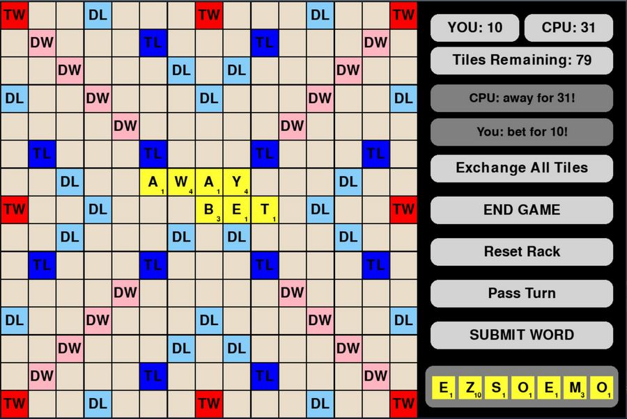

Scrabble ↗

-
Created a scrabble game in Python using Pygame that enabled a user to compete against the computer.
-
Implemented a trie data structure to store the dictionary and facilitate fast lookup of words and prefixes.
- Developed an algorithm that allowed the computer to generate high scoring moves extremely quickly.
- Python
- Pygame
- Algorithms
- Data Structures
- Git
Sudoku Solver
-
Designed a program that read a partially filled sudoku board and used inference, the Arc Consistency (AC-3) algorithm, and backtracking to efficiently find a solution.
- Python
- Algorithms
- Data Structures
PennSearch
-
Parsed network topology data and constructed a routing table for each node using link state and distance vector routing protocols in the NS-3 network simulator.
- Implemented chord, a distributed hash table, as an overlay network on top of the underlying routing protocol.
- Built a distributed hash table keyword-based search engine that read metadata files containing documents and keywords, published the data to the network, and performed distributed searches using chord.
- C++
- Networking
- Git
- Docker
Covid 19 Data Analyzer
-
Developed a Java program that parsed Covid-19 vaccination rates, property values, and population demographics for Philadelphia and performed various computations based on user input.